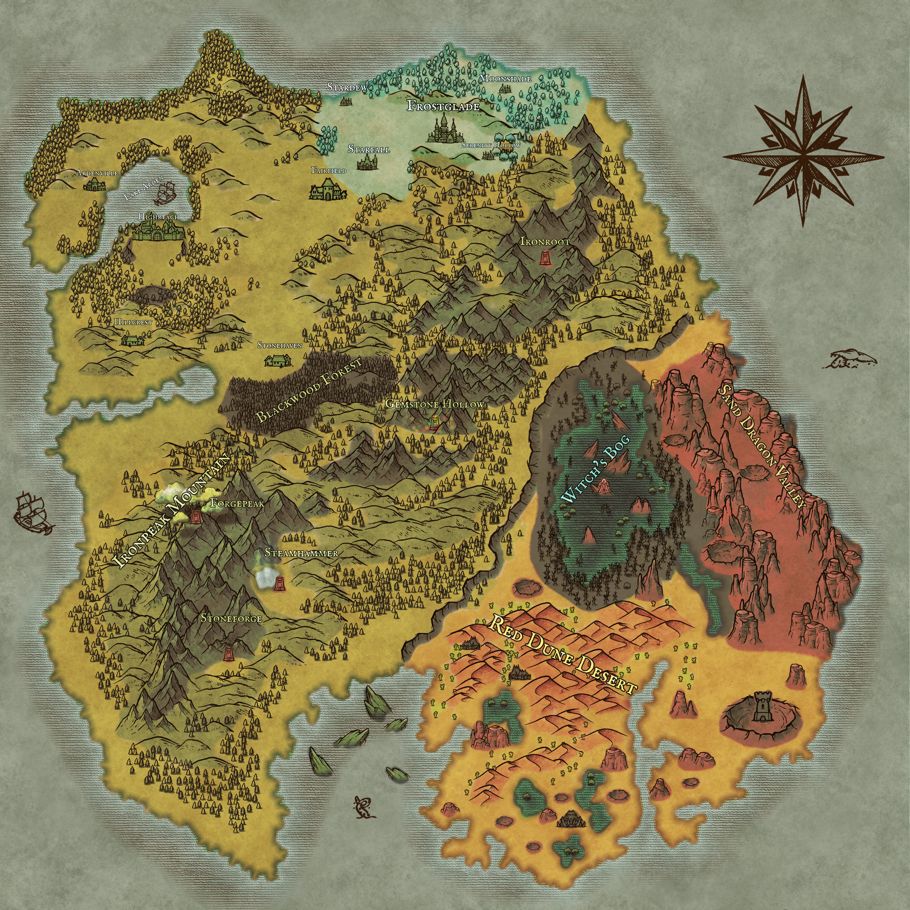

Region outlines: draft for you to correct
Suggested outlines drawn over the world map. Nothing uses them yet. The solid white line is the suggested border between Crestfall and the Ironpeak Mountains, following the foot of the mountains. Tell me which points to move, or which side a place should be on.
Loading…
